ParallaxCompare: 60-minute exploration
Tested published main at f246aa7 in the optimized native Linux GUI and CLI. The later v0.0.13 release commit e4b6ee6 changes version/packaging/docs only; application source and dependency versions are identical. Application source was left unchanged by this exploration.
14 reproduced findings: 5 P1, 6 P2, 3 P3. The most serious affect editing, stale saves, archive content preservation, and unreadable directory comparisons.
Run and verification
{
"testedCommit": "f246aa7c6d9c488f84ab5fa66e4f570f3faa972f",
"releaseSourceEquivalentCommit": "e4b6ee6fc486e7438628a386a2fb866d5ab2de22",
"releaseVersion": "0.0.13",
"continuousStart": "2026-10-26T09:58:31.909509+00:00",
"continuousEnd": "2026-10-26T10:58:33.803472+00:00",
"continuousSeconds": 3601.8939708279213,
"postRunChecks": {
"utc": "2026-10-26T10:59:35.567946+00:00",
"monotonic": 650720.042112018,
"activePeriodSeconds": 3663.65845850599,
"finalExtraCycles": 43,
"finalJavascriptErrors": [],
"nativeProcessAlive": true
},
"successfulRepeatedCycles": 1075,
"correctedHarnessAttempts": 21,
"findingCount": 14,
"severityCounts": {
"P1": 5,
"P3": 3,
"P2": 6
},
"rustTestsPassed": 370,
"rustTestsIgnored": 3,
"frontendTestsPassed": 12,
"svelteErrors": 0,
"svelteWarnings": 0,
"javascriptErrors": 0,
"nativeCrashes": 0,
"note": "Earlier idle runtime is excluded. Repeated-use loop pauses are used for focused native GUI scenarios. Harness mistakes are excluded from product findings."
}
Coverage: folder hierarchy/flat/status filters; text editing, Unicode, paste, save/undo and line endings; empty, invalid and binary files; ZIP and nested archives; Git refs/tags/history and PR head/merge base; symlink/executable conflict resolution; 100k/1M-line navigation/search; 4,000 separated merge conflicts; YAML, CSV, SQLite, Sphinx-Needs, DCM/PDX, AUTOSAR, S-CORE/FlatBuffers, images and Office views.
Known passes include the earlier typed YAML key, explicit scalar tag, CSV boundary, Git mode, empty merge and many-conflict initialization fixes. A 4,000-conflict GUI open took about 0.65 s. No live enterprise GitHub instance or network/SharePoint mount was available; no claim is made about those systems. Memory samples alone are not treated as evidence of a leak.
| ID | Priority | Finding |
|---|
| H01 | P1 | Enter in the merge editor drops focus and subsequent typing |
| H02 | P1 | Two-way Save overwrites a detected external edit without confirmation |
| H04 | P1 | Saving an old archive entry reverts unrelated content after a whole-ZIP replacement |
| H05 | P1 | Unreadable Git subdirectories are silently reported Same with zero errors |
| H14 | P1 | A single multiline clipboard paste is inserted twice |
| H06 | P2 | Needs normalization treats unknown scalar fields as unordered lists |
| H07 | P2 | A quoted literal YAML << key is expanded as a merge key |
| H08 | P2 | Conflict list spends seconds spawning Git per stage instead of batching |
| H09 | P2 | Syntax checks keep running after the conflict tab closes |
| H11 | P2 | Merge horizontal scroll can move the entire line out of view |
| H12 | P2 | Merge input text beyond the display window cannot be inspected |
| H03 | P3 | Two empty text files offer no way to start editing |
| H10 | P3 | Long Git ref names squeeze the repository path out of the header |
| H13 | P3 | Displayed file size does not update after saving edits |
H01 · P1 · Enter in the merge editor drops focus and subsequent typing
Reproduce
- Open merge-editor/base.txt, local.txt and remote.txt; choose result.txt as the output.
- Click the first result line, replace it with before, press Enter, then type ABC.
- Save the result. This also reproduces with 250 ms between keys, not just a fast burst.
Observed
One Enter followed by ABC saves before\n\nbeta\n; ABC is missing. The active element becomes BODY while a replacement editor exists but is not focused.
Expected
Typing should continue in the new line and save before\nABC\nbeta\n.
Cause
The Enter handler queues a merge edit, then focuses an input before the returned info resets the result row cache. Resetting renders loading/replacement rows and removes the focused input; focus/caret are not restored and following keys are not queued.
Fix direction
Keep an explicit pending caret and input queue across merge edits, and restore focus only after the requested result row is loaded. The two-way editor already has a corresponding mechanism.
Regression coverage
- Native key actions: Enter + ABC at 0/30/100/250 ms; assert focus, content, save and undo. Also test Enter near virtual chunk boundaries.
New merge-editor finding. Related to #9/R01, which concerned the separate two-way editor.
Source: app/src/lib/MergeView.svelte:99, app/src/lib/MergeView.svelte:340, app/src/lib/rowPane.svelte.ts:52
92-portable-merge-enter.png
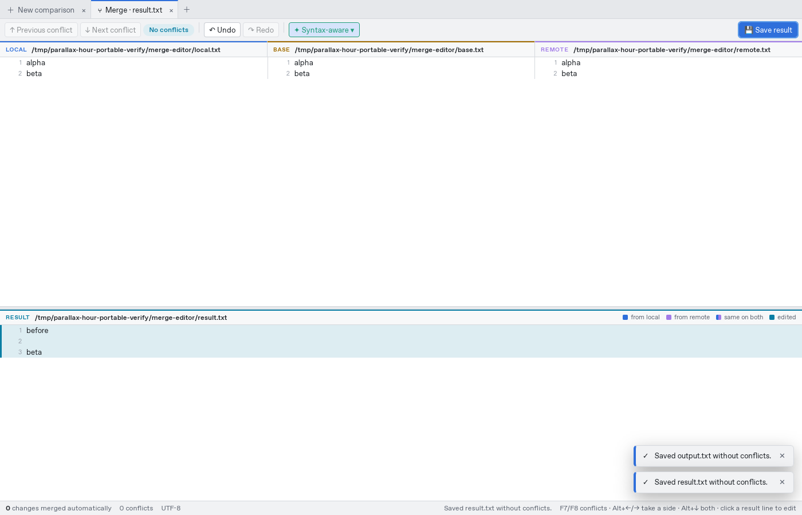
H02 · P1 · Two-way Save overwrites a detected external edit without confirmation
Reproduce
- Compare editor/left.txt and right.txt; edit the right first line and leave the line editor.
- Replace right.txt from another editor/process with External edit must survive\n.
- Wait for The file changed on disk, then press Ctrl+S.
Observed
The external bytes are replaced with the older in-app draft; the changed-on-disk warning can remain visible after the destructive save.
Expected
A stale save should write nothing until the user explicitly chooses overwrite or another destination.
Cause
The watcher sets changedOnDisk but save_side unconditionally applies Change::Put. Unlike merge_save, it has no content/version precondition.
Fix direction
Track each opened/saved side version and check before writes, including other tabs, deleted/replaced files and archive entries. Offer explicit overwrite/reload/save-as. Merely displaying a banner is insufficient.
Regression coverage
- Externally change the same side after a draft; save must preserve external bytes until explicit overwrite. Test duplicate independent tabs and opposite-side changes.
Distinct from #8/F17: the watcher DOES detect this change. The recent #10/M01 guard protects merge results, not normal file comparisons.
Source: app/src-tauri/src/commands.rs:1521, app/src/lib/TextView.svelte:1486
12-text-external-change.png
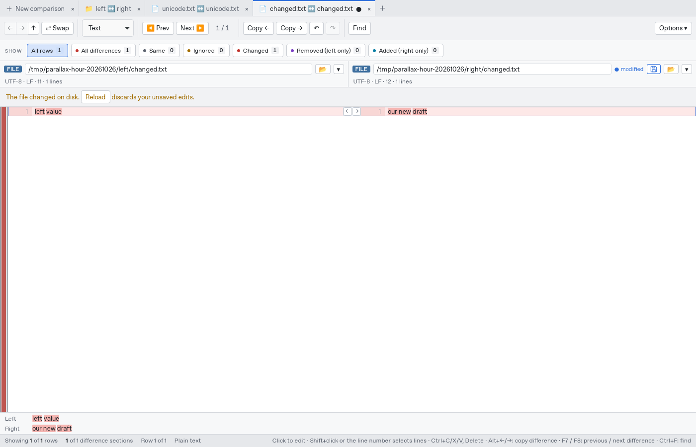
13-text-external-after-save.png
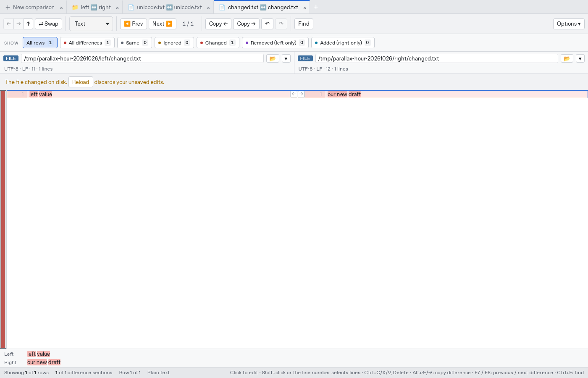
H04 · P1 · Saving an old archive entry reverts unrelated content after a whole-ZIP replacement
Reproduce
- Compare archive/reference.txt with archive/dest/target.zip!/a.txt. Edit the ZIP entry to MY A and leave it unsaved.
- In another tab compare archive/source against archive/dest. Select target.zip, Copy right and confirm. The ZIPs deliberately have equal size (206 bytes) and the same preserved mtime.
- Verify the copied destination contains NEW A and NEW B, then return to the old entry tab and save.
Observed
After the raw ZIP copy, entries are NEW A / NEW B. Saving a.txt yields MY A / OLD B: b.txt is silently reverted even though it was not edited.
Expected
Saving a single entry must retain the latest unrelated entries or reject the stale save.
Cause
ArchiveMount.revalidate relies on size + second-resolution mtime and a process generation. Generations are incremented for nested archive rewrites only; a whole archive copied/replaced through the local file path does not advance that version. Equal-size/equal-mtime replacements leave the cached old archive valid. A dirty file tab does not reload the cache when its watcher warns.
Fix direction
Invalidate or version all whole-archive writes as well as inner rewrites. Use a robust identity/version/content check for externally replaced containers; preserve latest unrelated entries under the coordinated write lock. Add stale-save protection to normal file edits too.
Regression coverage
- The exact GUI sequence above; aliases and atomic replacements; same size and mtime; nested archives. Keep the independent inner-entry save regression, which passed five repetitions.
Follow-up to closed #11/C01. Its original two-inner-write scenario passes; this replaces the whole container. Also reproduced directly against the production core; see archive-probe.rs and archive-direct-result.txt.
Source: crates/parallax-core/src/vfs/mount.rs:22, crates/parallax-core/src/vfs/mount.rs:72, crates/parallax-core/src/vfs/mount.rs:188, crates/parallax-core/src/ops.rs:74
61-archive-before-copy.png
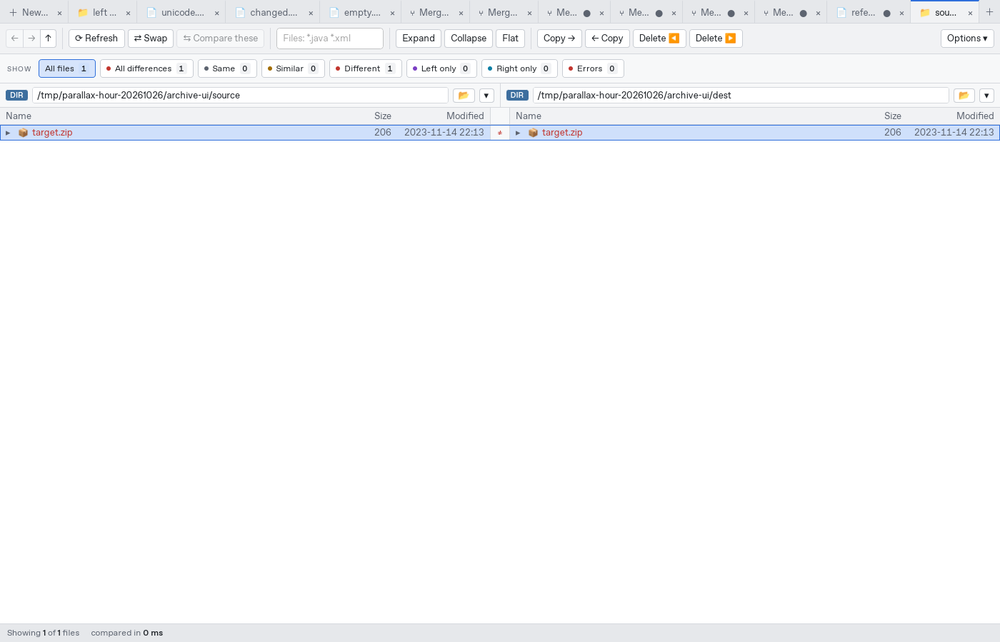
63-archive-stale-draft.png
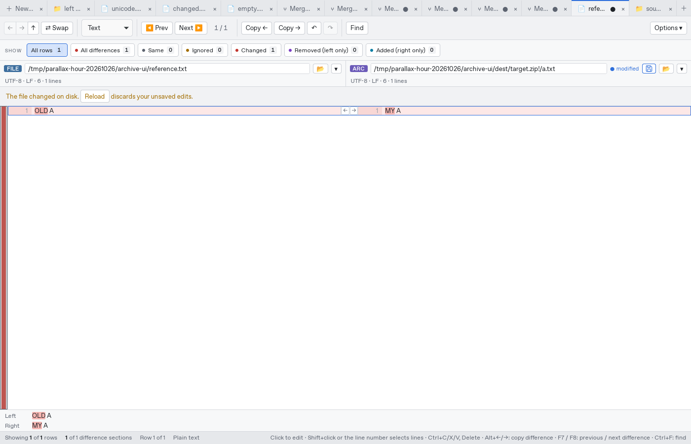
94-archive-unrelated-entry-reverted.png
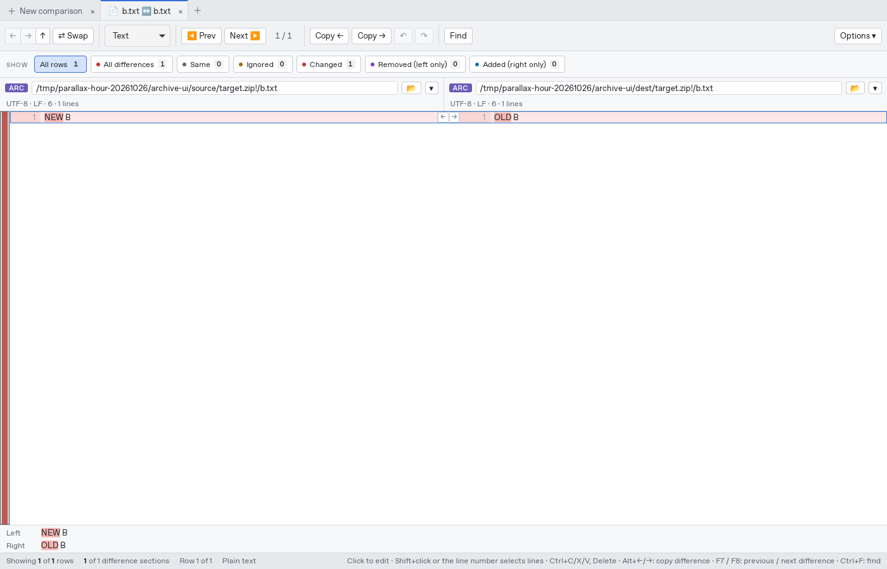
H05 · P1 · Unreadable Git subdirectories are silently reported Same with zero errors
Reproduce
- Use the two generated permissions repositories, with tracked visible.txt and differing restricted/secret.txt.
- As a non-root user, chmod 000 both restricted directories; compare the repository folders with Gitignore respected.
- Expand restricted and inspect Errors. Restore permissions with chmod 755 afterwards.
Observed
At uid 1000, the UI lists restricted as Same and empty, counts only visible.txt and reports Errors 0. The CLI also returns root.status=same, files=1, errors=0 and exit 0. Control: --no-gitignore reports the unreadable directory as an error and exits 2, isolating the snapshot path.
Expected
Represent an unreadable subtree as an error/incomplete comparison; never assert it is empty or identical.
Cause
LocalFs.walk discards ignore::WalkError; entry_from_path/add_tracked also skip failed metadata lookups. The snapshot retains an empty directory without the traversal error.
Fix direction
Preserve traversal errors in the snapshot/VFS and propagate an error node/completeness state through comparison, refresh and CLI exit handling.
Regression coverage
- Non-root tests for unreadable root, tracked/untracked child directories and permission recovery. CLI exit 2 and GUI Errors must agree; readable different files remain Different.
Related to #8/F09, but this is a suppressed traversal error and false equality/exit 0, not an error already shown with the wrong exit code.
Source: crates/parallax-core/src/vfs/local.rs:84, crates/parallax-core/src/vfs/local.rs:100, crates/parallax-core/src/vfs/local.rs:133
65-unreadable-git-directories.png
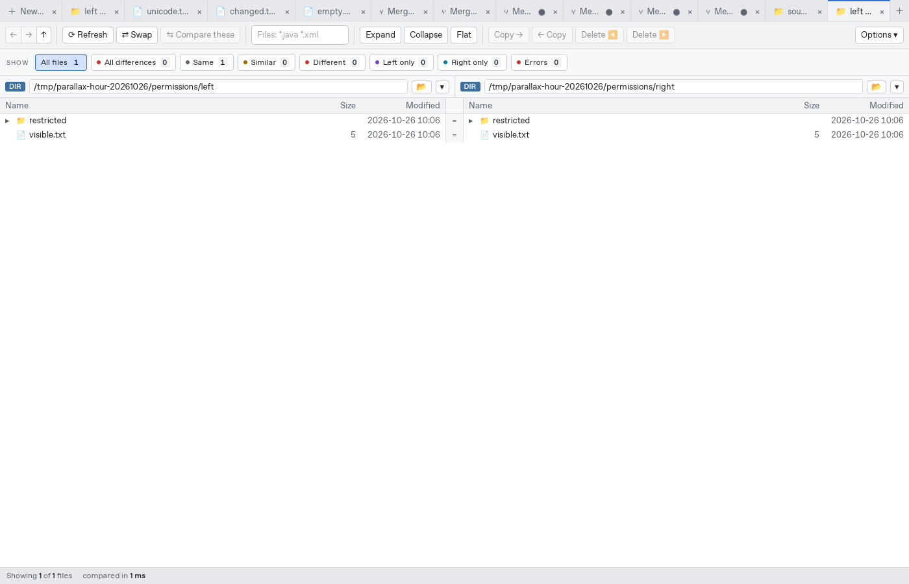
66-unreadable-expanded.png
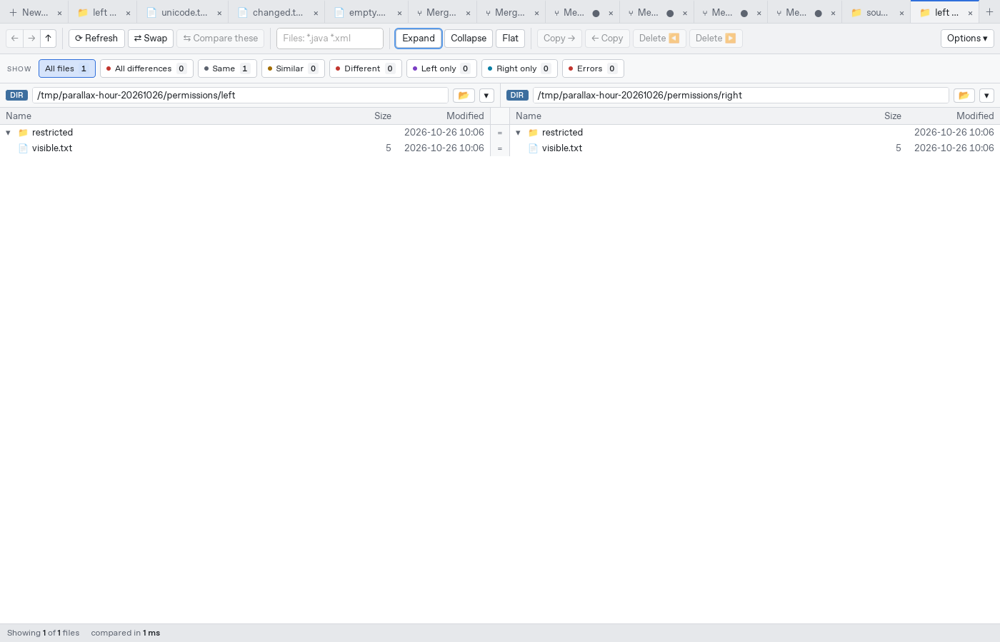
H14 · P1 · A single multiline clipboard paste is inserted twice
Reproduce
- Compare editor/left.txt and right.txt (alpha\nbeta\n). Click the right first line and select alpha in the line editor.
- Put three lines in the native clipboard (😀 line one, line two, line three) and press Ctrl+V once, then save.
Observed
One trusted paste event produces the three-line payload twice: 😀 line one\nline two\nline three😀 line one\nline two\nline three\nbeta\n. Native Ctrl+V and a synthetic bubbling paste both reproduce.
Expected
A single paste should replace the selection once, producing three inserted lines followed by beta.
Cause
onPaste prevents the default but does not stop propagation. Its commit sets awaiting; the same event bubbles to the viewport onViewPaste, whose holdPaste now queues it. replay applies that payload a second time.
Fix direction
Handle each paste once: stop propagation when consumed and/or reject already handled/defaultPrevented events before holdPaste in the ancestor. Keep legitimate paste-ahead queuing.
Regression coverage
- Native multiline Ctrl+V in an active input and a bubbling ClipboardEvent; assert one insertion, caret, undo and save. Also test a genuine second paste while awaiting.
native-paste.log records exactly one paste event with isTrusted=true and the complete saved/expected text.
Source: app/src/lib/TextView.svelte:797, app/src/lib/TextView.svelte:838, app/src/lib/TextView.svelte:1035
87-native-multiline-paste.png
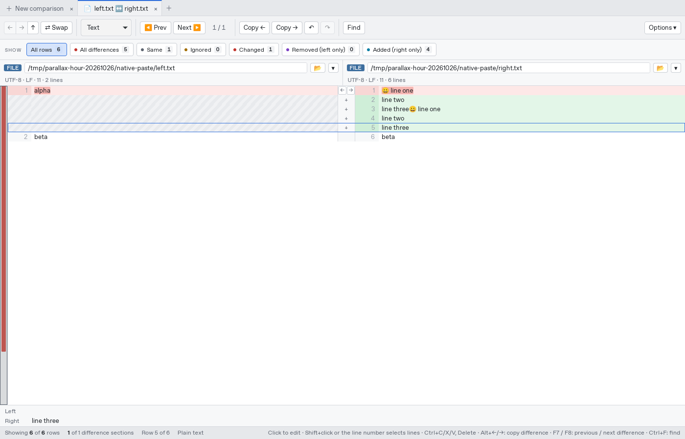
H06 · P2 · Needs normalization treats unknown scalar fields as unordered lists
Reproduce
- Compare needs/left/req.rst and needs/right/req.rst, or their parent folders.
- Both projects declare needs_extra_options=["product_code"]. The only changed requirement value is alpha,beta versus beta,alpha.
Observed
The folder labels req.rst Similar. The default Needs view normalizes both product_code values to alpha, beta and shows zero differences. The CLI exits 0.
Expected
An arbitrary extra option is a string unless the project declares list semantics. These values must remain different.
Cause
needs::normalize_value splits on comma/semicolon/pipe and sorts any no-space multi-part value via the id_like heuristic, regardless of field name.
Fix direction
Limit list normalization to known/configured list fields, preserving arbitrary custom scalar values and order.
Regression coverage
- Custom comma/semicolon/pipe strings remain different, while known tags/links reorder as intended. Cover both reST and needs.json.
Source: crates/parallax-core/src/convert/needs.rs:88, crates/parallax-core/src/convert/needs.rs:384
67-needs-custom-folder.png
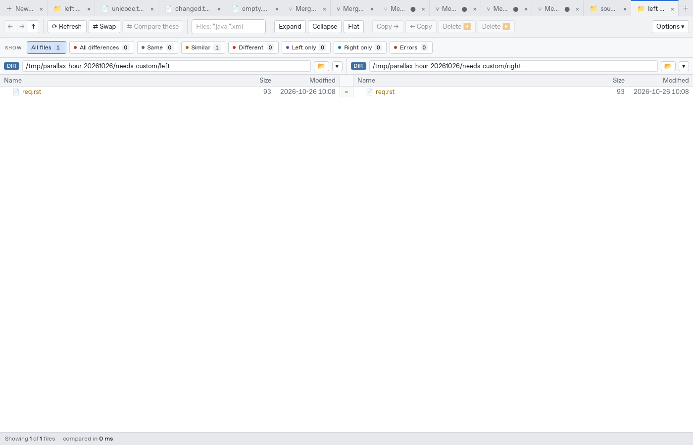
69-needs-custom-normalized.png
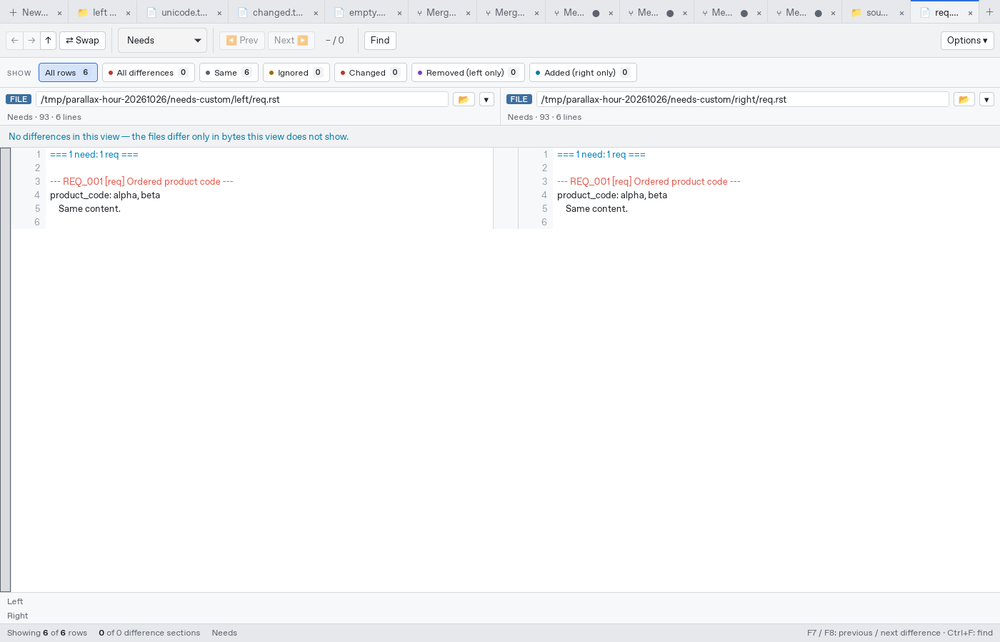
H07 · P2 · A quoted literal YAML << key is expanded as a merge key
Reproduce
- Compare yaml/left/data.yaml: "<<": {x: 1} with yaml/right/data.yaml: x: 1.
- Inspect the folder result and the default Normalized YAML view.
Observed
Both render x: 1. The folder/CLI classify the files Similar with same data and exit 0. PyYAML instead reads {"<<":{"x":1}} and {"x":1}.
Expected
Quoted/explicitly string-tagged << is an ordinary mapping key, not a merge directive.
Cause
Scalar parsing discards the distinction between a quoted string and the special merge key; finish_map interprets every Scalar::Str("<<") as a merge.
Fix direction
Preserve scalar style/tag information needed to recognize merge keys and honor explicit string keys. Do not expand a quoted or !!str << key.
Regression coverage
- Quoted <<, !!str << and legitimate unquoted merge/alias fixtures; assert structure, rendered view, folder status and CLI exit.
A separate semantic case from the typed-key and explicit-value-tag fixes in #11, which passed their original checks.
Source: crates/parallax-core/src/convert/data.rs:171, crates/parallax-core/src/convert/data.rs:237
70-quoted-merge-folder.png
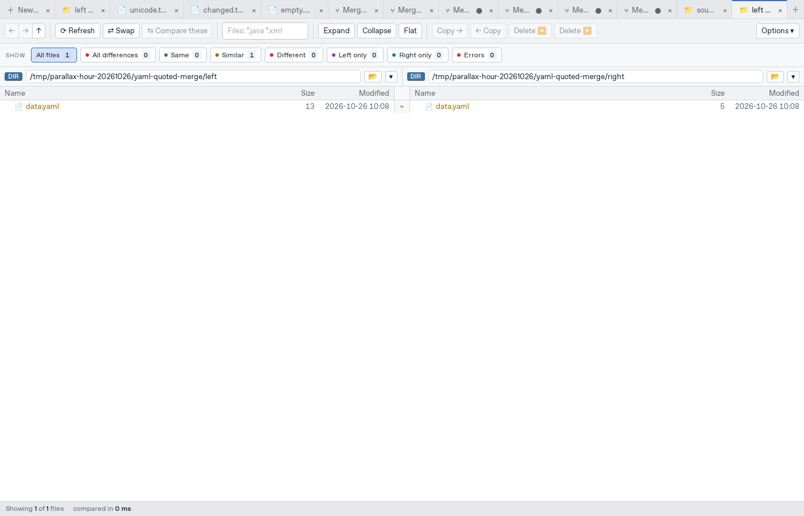
72-quoted-merge-normalized.png
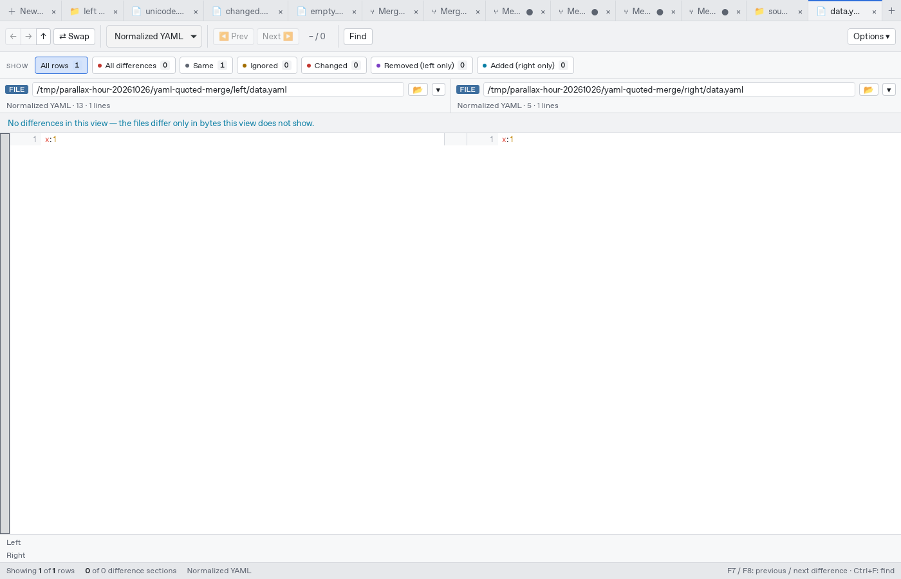
H08 · P2 · Conflict list spends seconds spawning Git per stage instead of batching
Reproduce
- Open Resolve conflicts for conflict-many (120 tiny .txt conflicts; only three distinct stage blobs).
- Measure until the 120 file rows become available.
Observed
7.609 seconds untraced before rows; a traced repeat took 8.557 seconds. Classification reads all 360 stages with individual git cat-file processes even though they repeat three OIDs.
Expected
Show the conflict list promptly and classify small files using a batched/cached operation or lazily.
Cause
repo_conflicts synchronously iterates every file and stage, calling stage_content for each. Each command starts a process and is polled on a 20 ms interval. Syntax analysis then reads those stages again.
Fix direction
Batch git cat-file reads, deduplicate OIDs per operation and share the stage snapshot with syntax checks. Avoid blocking initial list display on every classification.
Regression coverage
- 120/1000 tiny conflicts with repeated and unique OIDs; record time to first rows and subprocess count. Preserve binary/link/gitlink classification.
Measured timings are from the optimized Linux build. Do not extrapolate them as measurements of a 1000-file repository.
Source: app/src-tauri/src/merge.rs:754, crates/parallax-core/src/conflicts.rs:229, crates/parallax-core/src/process.rs:130
77-120-repository-conflicts.png
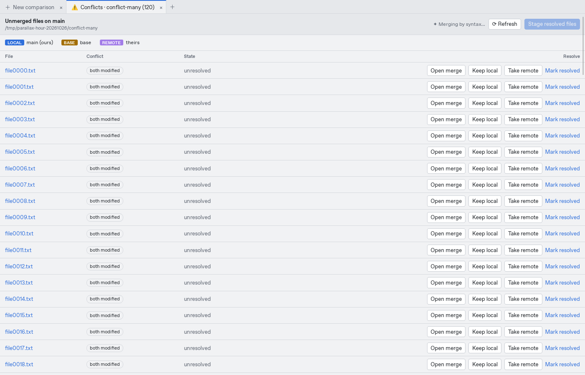
H09 · P2 · Syntax checks keep running after the conflict tab closes
Reproduce
- Open the same 120-conflict repository with built-in syntax checking enabled.
- Close its tab shortly after the rows appear, while Merging by syntax is shown.
Observed
Timestamped trace: after the tab closed at 10:26:59.308 UTC, 793 further Git executions ran, including 341 cat-file and 113 ls-files, for another 19.268 seconds. No conflict tab remained mounted.
Expected
Closing the view should cancel/invalidate further per-file checks and release resources after any unavoidable in-flight request.
Cause
ConflictsView.onDestroy only unlistens from merge-saved. checkSyntax keeps its run number valid and continues the for loop after component destruction.
Fix direction
Invalidate checkRun on destruction and check cancellation before scheduling each request; add backend cancellation for in-flight expensive work where practical.
Regression coverage
- Close during a multi-file syntax scan; at most the current request may finish and no later files should start. Also test refresh, engine change and close/reopen.
conflict-after-close-timed.json and the timestamped exec trace provide the counts. The native IPC invoke function was immutable, so an attempted JS timing wrapper was not used as evidence.
Source: app/src/lib/ConflictsView.svelte:69, app/src/lib/ConflictsView.svelte:100
77-120-repository-conflicts.png
H11 · P2 · Merge horizontal scroll can move the entire line out of view
Reproduce
- Open merge-medium (400 x characters followed by LOCAL / BASE / REMOTE).
- Move each input column scrollbar fully right.
Observed
All three input lines become blank. For local: rendered DOM text width 2846.16 px, code viewport 420.66 px, allowed scroll 3249 px. Its text ends at x=-356.84 while the code pane starts at x=46.
Expected
At maximum scroll the end of each line must remain visible, with no unusable blank tail.
Cause
The scrollbar width is estimated from character count in ch units rather than the rendered content. In this Linux font fallback environment the estimate does not match actual glyph metrics; tabs are also estimated as fixed extra characters rather than tab stops.
Fix direction
Derive/clamp the horizontal range from actual rendered code widths (or verified matching monospace metrics), including gutters, tabs and font fallback. Preserve independent column scrolling.
Regression coverage
- 400-character input with native font fallbacks, tabs, mixed glyph widths and zoom/window resize; assert final glyphs are visible at maximum scroll.
Follow-up to #10/M05. This occurs below the 10k truncation limit, so H12 is independent. DOM range measurements are in scroll-measure.log.
Source: app/src/lib/MergeView.svelte:142, app/src/lib/MergeView.svelte:777, app/src/lib/MergeView.svelte:1087
82-medium-line-max-scroll.png
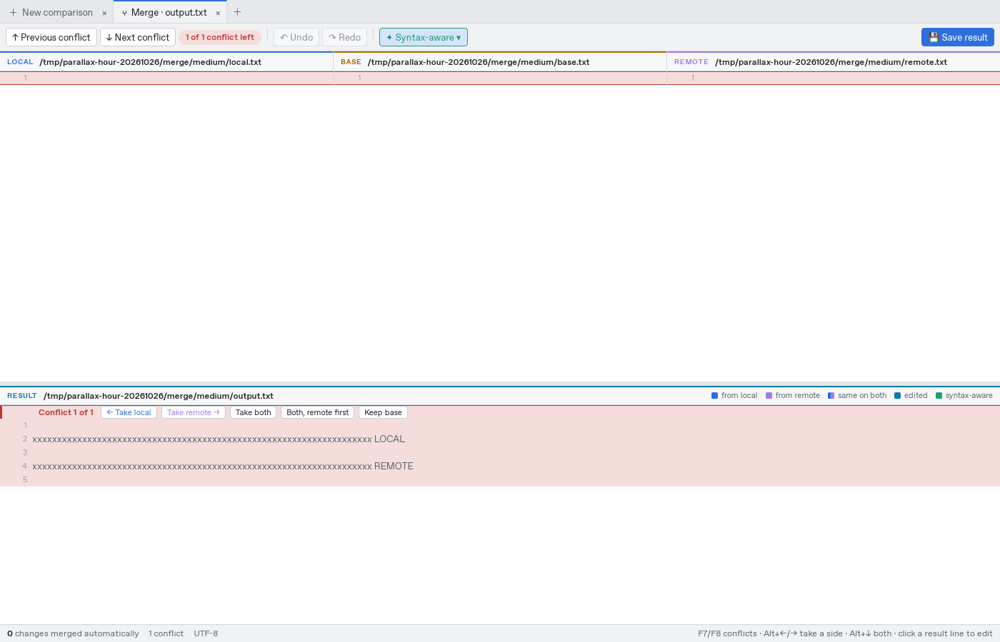
H12 · P2 · Merge input text beyond the display window cannot be inspected
Reproduce
- Open merge-long (20,000 x characters followed by BASE / LOCAL / REMOTE).
- Inspect/scroll the input columns, including the end of the displayed base text.
Observed
Local/remote show their changed suffixes, but base contains only the first 10,000 characters plus ellipsis; BASE is absent from the DOM. No read-only full-line action or horizontal window request is available.
Expected
The user must be able to inspect all three versions before choosing, even when display rendering is bounded.
Cause
LineView clips to MAX_SHOWN_LINE=10,000, taking base from the start and changed sides around their first mark. Horizontal scrolling only translates the already shortened string. Only result lines offer full text when edited.
Fix direction
Provide lazy horizontal text windows or a read-only full-line inspector/copy action for each input, and show how much was omitted. Retain bounded initial rendering.
Regression coverage
- Changes and relevant base content beyond column10k; multiple widely separated intraline changes; full read-only input access without first taking a side.
Remaining limitation after #10/M05, not a claim that the recent ordinary-width scrolling fix was absent. Screenshot positions are limited to actual rendered text width to isolate this from H11.
Source: app/src-tauri/src/commands.rs:1113, app/src-tauri/src/commands.rs:1136, app/src/lib/MergeView.svelte:763
89-truncation-isolated-from-scroll-range.png
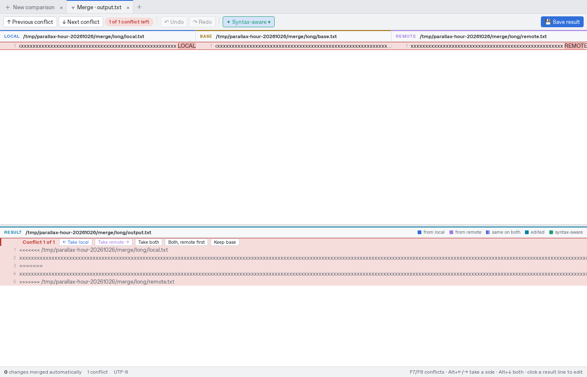
H03 · P3 · Two empty text files offer no way to start editing
Reproduce
- Compare empty/left.txt and empty/right.txt.
- Try clicking, Enter/F2 and typing in the empty comparison.
Observed
There are zero rows and no line input, while the footer says Click to edit.
Expected
Offer an empty editable row or an explicit start-typing action for each writable side.
Cause
The two-way grid only renders existing diff rows; both empty documents produce no row on which openEditor can operate.
Fix direction
Add an empty-document editing affordance and create the first line safely; preserve empty undo/save behavior.
Regression coverage
- Compare two empty files, type into either side, save and undo back to empty.
The analogous merge-result case from #10/M04 is fixed and passed here.
Source: app/src/lib/TextView.svelte:1688
14-empty-text.png
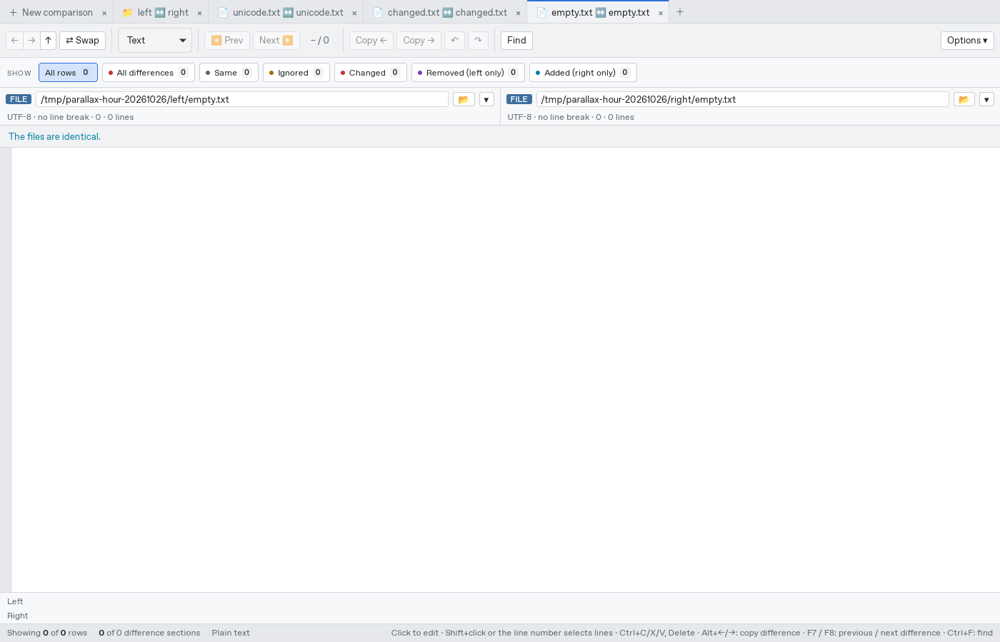
H10 · P3 · Long Git ref names squeeze the repository path out of the header
Reproduce
- Compare a short ref against feature/a-very-long-branch-name-for-testing-side-specific-dropdown-and-the-path-layout.
- At the normal 1400-pixel window width inspect the right path bar.
Observed
The right repository path collapses to 14 pixels and the ref/status content overflows the available half-width.
Expected
Both the repository/path and the selected ref must remain identifiable.
Cause
PathBar places the flexible path beside a non-shrinking ref on one row, without a bounded ref region.
Fix direction
Use the proposed two-row layout (path then ref/commit/actions), with min-width:0, truncation/tooltips and side-specific ref selection. Test the minimum 800-pixel window too.
Regression coverage
- Very long slash branches/tags, long repo/subpaths and asymmetric names at 800/1400 widths.
Previously discussed UX, reproduced on published main f246aa7. Existing unpublished local implementation work was excluded from this review.
Source: app/src/lib/PathBar.svelte:302, app/src/lib/PathBar.svelte:308, app/src/lib/PathBar.svelte:425
93-long-branch-clean-tabs.png
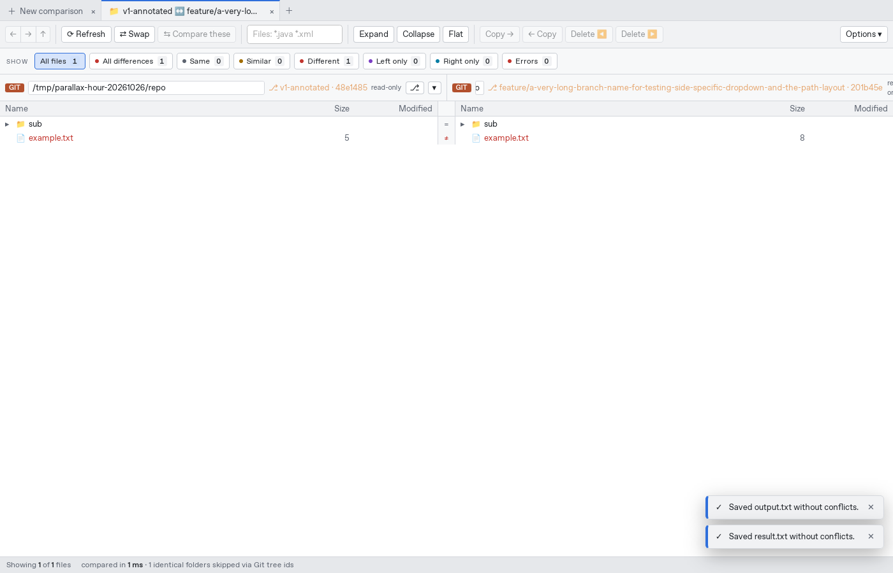
H13 · P3 · Displayed file size does not update after saving edits
Reproduce
- Compare metadata/left.txt (4 bytes, LF) and metadata/right.txt (6 bytes, CRLF).
- Use LF on the right; replace its first line with 100 x characters and save.
Observed
The right file is 103 bytes on disk; the UI still says UTF-8 · LF · 6 · 2 lines. The size only becomes correct after reopening/reloading.
Expected
Metadata after a successful save should describe the saved file, with any unsaved buffer size clearly distinguished if shown.
Cause
EditInfo carries current lines and line endings but no sizes; applyEdit keeps the initial SideInfo.size.
Fix direction
Return/update saved byte lengths in edit/save responses and refresh the relevant metadata after save without losing undo history.
Regression coverage
- Change byte length, encoding-sensitive Unicode text and line endings; verify saved byte count and preserved undo.
Source: app/src-tauri/src/commands.rs:1298, app/src/lib/TextView.svelte:1470
85-stale-file-size.png
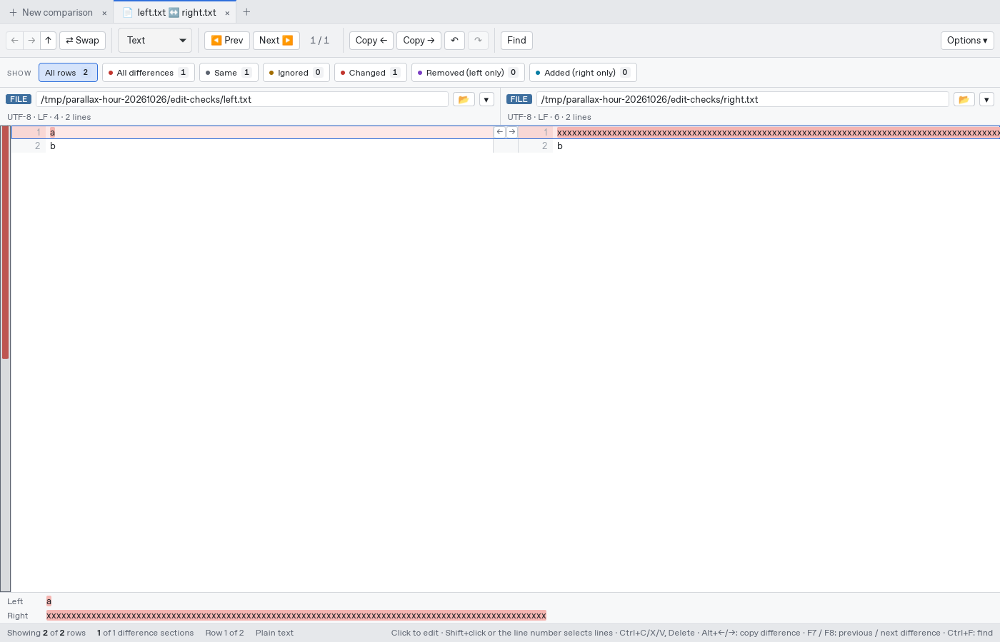
Final native GUI check
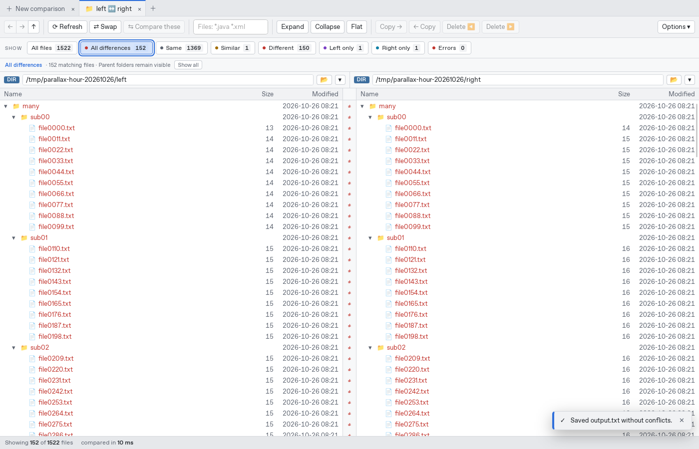
Reproduction package
create-fixtures.py --directory /tmp/parallax-review-fixtures creates fresh disposable cases without commits or identity changes. See README.md for exact steps and permission restoration. Logs retain corrected harness attempts; those are not application findings.